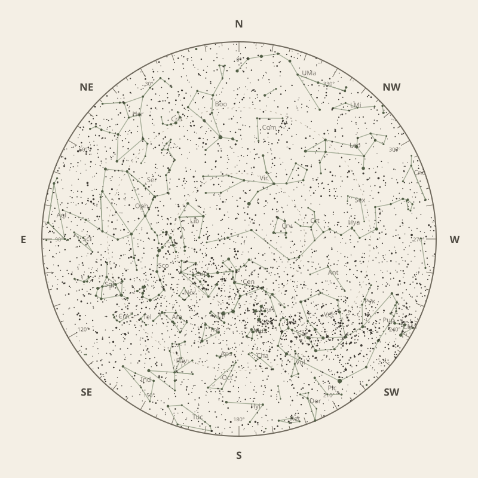

Monthly field almanac
May 2026


Galactic Centre viewing is best on 20 May 2026, from 8:21 pm to 5:57 am, reaching 89°.
- New Moon
- 17 May Darkest skies
- Full Moon
- 2 May Brightest skies
- Best dark window
- 20 May 12h 26m
Current conditions
Checking the sky near South East Queensland, Australia…
Sky chart: 15 May 2026, 10 pm
South East Queensland, Australia local time.
Show static monthly chart

Night planner
Choose a date to see astronomical darkness, Moon interference, Galactic Centre visibility, and planet altitudes and times.
Best low-Moon dark periods this month
- 5:31 pm–5:57 am12h 26m · 16% Moon
- 5:31 pm–5:57 am12h 26m · 9% Moon
- 5:32 pm–5:56 am12h 25m · 3% Moon


Galactic Centre sessions
- 8:21 pm–5:57 am9h 36m · core to 89°
- 8:31 pm–5:57 am9h 26m · core to 88°
- 8:32 pm–5:56 am9h 25m · core to 88°
Events
- HIP 69998 lunar occultation10:04 pm to 11:28 pm; Moon at 68° altitude for the first listed contact.
- HIP 73927 lunar occultation8:13 pm to 9:21 pm; Moon at 36° altitude for the first listed contact.
- HIP 74219 lunar occultation10:59 pm; Moon at 72° altitude for the first listed contact.
May highlights
- Occultations
HIP 66512 lunar occultation
3:01 am to 3:58 am; Moon at 31° altitude for the first listed contact.
- Meteor showers
Eta Aquariids
Peak conditions: 88% Moon illumination; 34° altitude predawn.
- Milky Way
Milky Way core window
9h 36m with 89° altitude.
- Comets
Comet 24P
65° altitude; magnitude 17.4.
- Planets
Neptune
Best monthly date at 54° altitude.


Moon phases
For faint deep-sky objects, observe when the Moon is below the horizon or weakly illuminated. For lunar relief, observe near the terminator; full Moon is best suited to ray systems and albedo features.
Download Moon phase CSV →

Planet visibility
Evening
- Jupiter4 May · 5:30 pm38° · Good
- Venus31 May · 5:30 pm20° · Fair
- Uranus4 May · 5:30 pm8° · Poor
 Jupiter
Jupiter Venus
Venus Uranus
UranusPredawn
- Neptune31 May · 6:00 am54° · Excellent
- Saturn31 May · 6:00 am48° · Excellent
- Mars31 May · 6:00 am22° · Fair
- Mercury5 May · 6:00 am7° · Poor
 Neptune
Neptune Saturn
Saturn Mars
Mars Mercury
Mercury

Data and downloads
Positions are unavailable for 2 comet entries.
Occultation times use a smooth lunar limb; confirm grazing events with IOTA Occult 4.